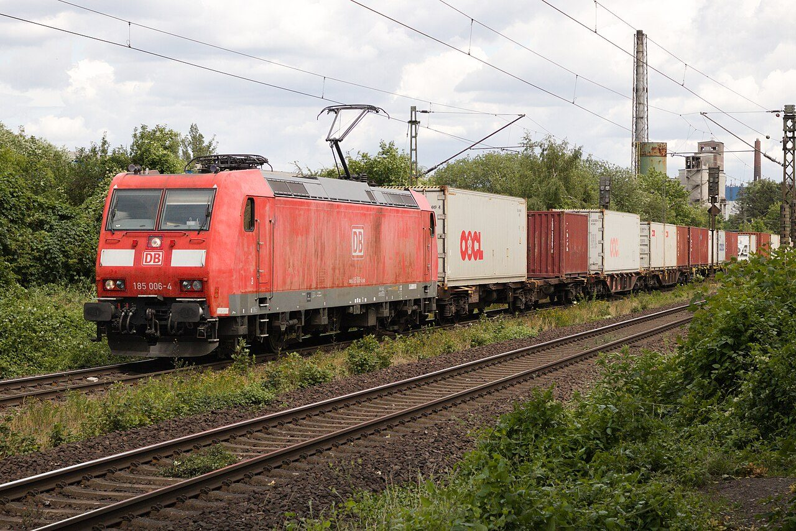
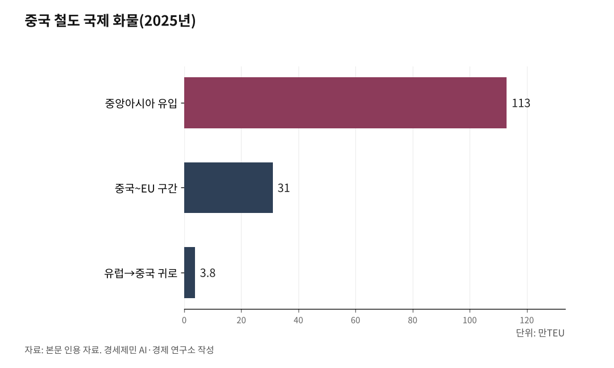

[중국철도⑨] 중유반열의 성적표, 대외무역 성장과 구조적 한계
누적 13만편·5200억달러, 그러나 대유럽 물동량은 되레 줄었다
대러 편중 80%·귀로 공컨테이너·폴란드 단일 경로가 발목을 잡는다
보조금 축소와 유럽 병목, 이름과 달리 중앙아 물류망으로 기운다
중국-유럽 화물열차(中欧班列, 중유반열)는 일대일로 물류의 간판이다. 2011년 첫 운행 이래 누적 13만편, 화물 가치 5200억달러를 넘어섰다.

중국 129개 도시에서 유럽 26개국 235개 도시와 아시아 11개국 100여개 도시에 닿는다. 그러나 성적표를 뜯어보면 성장과 한계가 뒤섞여 있다.
겉은 성장, 속은 대유럽 감소
외형은 커졌다. 2026년 1~2월 운행은 3501편으로 약 32% 늘었고, 화물량도 35만2100TEU로 약 25% 늘었다.
그러나 정작 대유럽 물동량은 줄었다. 2025년 중국~EU 구간 물동량은 31만TEU로 전년보다 14.1% 감소했다.
이름은 중국-유럽인데, 유럽으로 가는 짐은 오히려 준 셈이다. 해운 운임이 다시 싸지며 화물이 철도에서 바다로 빠진 탓이 크다.
사실상 중앙아 물류망
무게중심이 옮겨간다. 2025년 중앙아시아 유입 화물은 27.7% 늘어 113만TEU에 이르렀다.
같은 해 대유럽 물동량 31만TEU의 3.6배다. 동서 방향만 70만TEU에 이른다.
중유반열이 이름과 달리 중앙아 물류망으로 재편되고 있다. 허브가 경쟁력을 가르는데, 물류 경쟁력 분석에서는 이우와 정저우가 상위를 차지했다.
귀로 공컨테이너와 대러 편중
가장 큰 구조 문제는 편도 운행이다. 2025년 유럽에서 중국으로 오는 귀로 물량은 3만8000TEU로 사상 최저였다.
출발과 귀로 비율이 7 대 1까지 벌어졌다. 빈 컨테이너 회수 비용이 운임 구조를 왜곡한다.
대러시아 편중도 심하다. 서방 제재 뒤 대러 무역이 철도로 몰리며 중유반열의 대러 비중이 약 80%에 이른다. 실질적으로 중-유럽보다 중-러시아 물류망 성격이 강해졌다.
폴란드 단일 경로의 취약성
경로도 한쪽에 쏠렸다. 대유럽 물동량의 94%가 폴란드를 지나고, 그 대부분이 말라셰비체 환적역을 거친다.
취약성은 2025년 9월 드러났다. 러시아 무인기의 폴란드 영공 진입으로 벨라루스 국경이 봉쇄되며 유럽행의 약 90%가 막혔다.
봉쇄 첫 주에만 130편 넘는 열차가 벨라루스 브레스트역에 발이 묶였다. 9월25일 재개됐지만 단일 관문 의존이라는 약점을 남겼다.
보조금과 유럽 병목
성장의 뿌리엔 보조금이 있다. 국제철도연맹(UIC)은 2020년 보조금이 사라지면 물동량이 급감할 수 있다고 경고했다.
중국은 보조금을 점차 줄이는 방향이다. 도시 간 경쟁이 물량 확보에서 실질 경쟁력으로 옮겨간다.
유럽 안에서도 병목이 있다. 시속 350㎞로 달리던 열차가 유럽 경내에선 하루 350㎞밖에 못 나아가는 인프라 격차다.
평가는 엇갈린다. 시아먼대 쑨촨왕 교수는 화물열차의 적시성과 안정성, 비용 경쟁력에서 종합 우위가 강화된다고 본다.
일대일로 속 철도의 자리
철도의 위상은 일대일로 안에서 되레 줄었다. 2025년 중국의 일대일로 관여 규모는 2135억달러로 역대 최고였지만, 운송 부문 비중은 6.2%로 최저로 떨어졌다.
에너지와 광물 같은 자원 투자가 43%를 차지하며 철도·도로의 비중을 밀어냈다. 화물열차는 여전히 유라시아 내륙국에 바닷길을 열어주는 동력이지만, 투자 우선순위에서는 뒤로 밀린 셈이다.
전망과 한국의 함의
시장은 커진다. 중-유럽 철도화물 시장은 2026년 183억달러에서 2031년 353억달러로 연 14% 성장이 전망된다.
다만 전제가 많다. 우크라이나 분쟁과 러시아 제재, 보조금 정책, 유럽 인프라 개선이 모두 변수다.
한국엔 기회와 경고가 함께 있다. 인천·부산이 동북3성 화물의 해륙복합 환적에 올라타되, 대러 리스크와 공컨테이너 부담까지 함께 계산해야 한다.
간판은 화려하지만 속은 구조 개혁이 급하다. 귀로 물량과 경로 다변화가 중유반열의 다음 10년을 가른다.
※ 이 기사는 AI 프로그램 클로드를 활용해 작성했습니다.

참고문헌
· "中欧班列累计开行突破13万列 货值超5200亿美元", 中新网, 2026.5.9., https://www.chinanews.com.cn/cj/2026/05-09/10617987.shtml
· "Rail freight flows from China shift in 2025", TrasportoEuropa, 2026., http://www.trasportoeuropa.it/english/rail-freight-flows-from-china-shift-in-2025/
· "China-Europe Rail Freight Surges as Supply Chains Shift", Caixin Global, 2026.3.20., https://www.caixinglobal.com/2026-03-20/china-europe-rail-freight-surges-as-supply-chains-shift-102424841.html
· "1∼2월 中-유럽 화물열차 운행 32% 증가…"중러 무역이 80%"", 연합뉴스, 2026.3.20., https://www.yna.co.kr/view/AKR20260320088900083
· "Reduction of EU-China Rail Subsidies", New Silk Road Network, https://www.newsilkroadnetwork.com/news/reduction-of-eu-china-rail-subsidies
· "China-Europe Rail Freight Transport Market Size & Share Analysis", Mordor Intelligence, https://www.mordorintelligence.com/industry-reports/china-europe-rail-freight-transport-market
· "1至2月中欧班列开行3501列 发送货物35.2万标箱", 新华网, 2026.3.12., https://www.news.cn/20260312/b68ffe843f08453495c5af40e656afe2/c.html
· "China Belt and Road Initiative (BRI) Investment Report 2025", Griffith University, https://greenfdc.org/china-belt-and-road-initiative-bri-investment-report-2025/
사진 출처
· [대표사진] Alex Noble, "20230706 DB Cargo 185006.jpg", 위키미디어 공용, CC0, https://commons.wikimedia.org/wiki/File:20230706_DB_Cargo_185006.jpg
※ 이 기사는 인공지능을 활용해 작성했습니다.
관련기사
- [중국철도⑧] 중국 고속철도의 두 얼굴, 성장 엔진과 재정 위기
- [중국철도⑦] 제5차 국가철도망이 한국 대륙철도의 분수령
- [중국철도⑥] 한국이 들어선 국제 철도 통로는 다섯 가운데 둘
- [중국철도⑩] 중국 고속철, 바다 건너 인도네시아를 46분에 꿰뚫다
저작권자 © AI경세제민 무단전재 및 재배포, AI학습 및 활용 금지